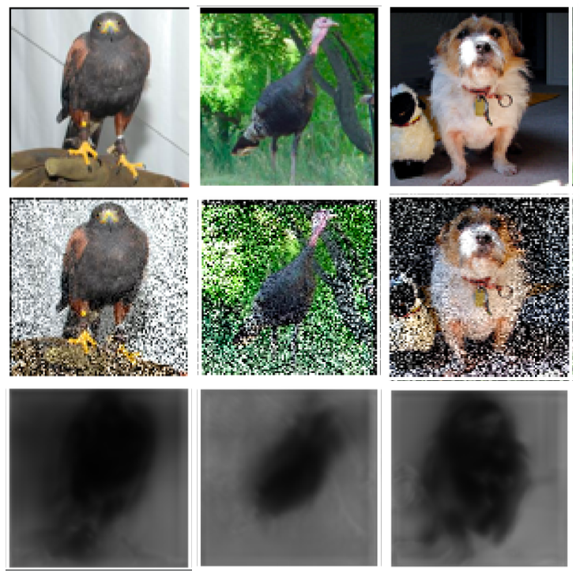
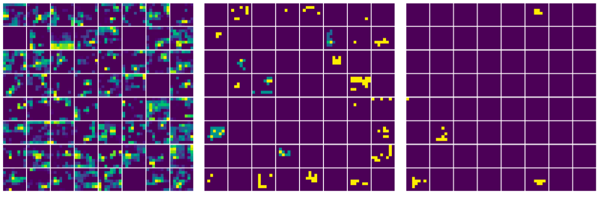
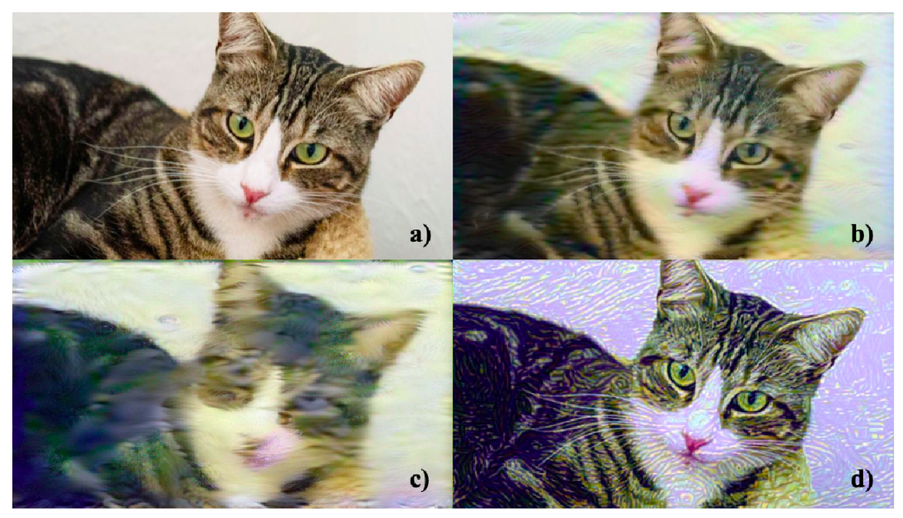
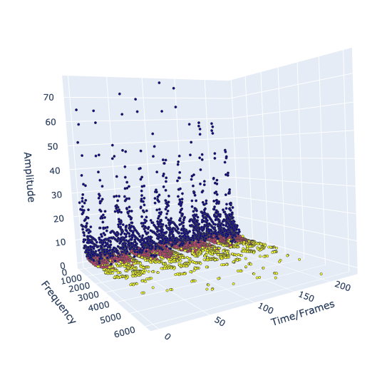
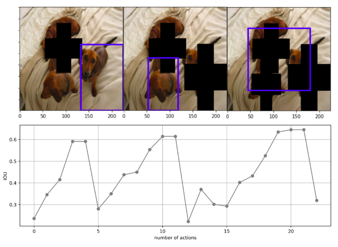
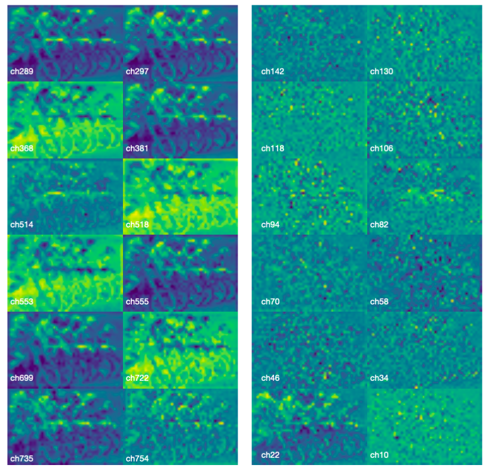
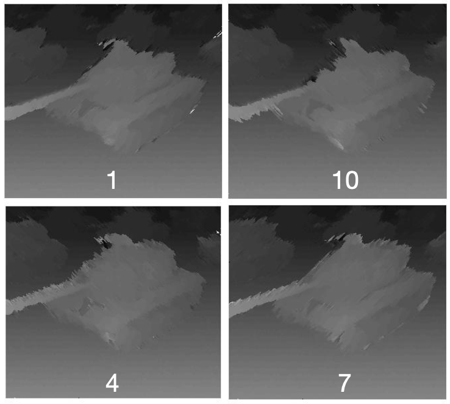

Lingyu Zhang
Representation Learning Final Project
Details for Noise as Masks
We propose to use noise as masks for masked image modeling. While randomized patch masking has yielded decent results in self-supervised learning, it is not at all obvious that it is the optimal design. We show that theoretically inspired semantically-guided noise masks can be a potentially well-performing alternative.

Lingyu Zhang
Sparse and Low-Dimensional Models for High-Dimensional Data Final Project
Details for Entropy Constrained Information Bottleneck
We propose to use deterministic encoding along with actual quantization on latents, rendering the IB problem a source compression. By doing so, finite non-trivial mutual information can be estimated.

Christodoulos Constantinides, Lingyu Zhang
E6691 Final Project
Details for Black-box Adversarial Attacks with Style Information
We propose two types of blackbox attacks based on style transfer and investigate how robust classifiers behave against them.

Lingyu Zhang, Yiming Lin, Lucy Wang, Zhaoyuan Deng
Unsupervised Machine Learning Final Project
Details for Unsupervised Harmonic Sound Source Separation with Spectral Clustering
We modeled mixed sources of audio signals by sinusoidal modeling with Short-Time Fourier Transforms. Based on selected spectral peaks of sinusoidal parameters, we constructed a similarity function between time and frequency components, and applied spectral clustering to globally partition the data.

Jiawei Lu, Lingyu Zhang, Xinyi Liu, Yukai Song, Zixuan Yan
E6885 Final Project
Details for Exploring Diverse Ways To Improve An Agent On Active Object Localization With Deep Reinforcement Learning
We proposed improvement to using DQNs for Object Detection from four aspects, including using advanced CNNs to generate state representation, defining more flexible action spaces, changing reward function to avoid undesired activity in agent and using mask instead cross for multiple objects.

Lingyu Zhang
Undergraduate Thesis
Details for Design and Optimization of a Multi-scale Representation based Image Compression Network
Learned image compression has surpassed the rate-distortion performance of hand-crafted traditional image codecs in recent years. However, they are not yet practical because of their significantly slower decoding speed than classical algorithms. We investigated the possibility of directly performing vision tasks in the latent space and found that using a multi-scale encoder helped preserve semantic meaning in latent codes while maintaining state-of-the-art compression rates.

Lingyu Zhang
Computer Vision Final Project
Details for Dynamic Disparity Range Semi-Global Matching for Video Stereo Matching
Implemented an accelerated stereo matching algorithm for video sequences, utilizing a dynamic disparity range search based on temporal correlation between frames, saving 21% of computational time with minimal accuracy loss. Designed a Divided Section cost function, preserving more information than Census cost, achieving 18% better matching accuracy while trading off computational complexity.
